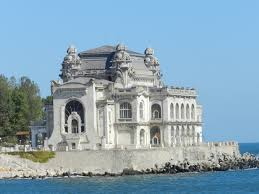
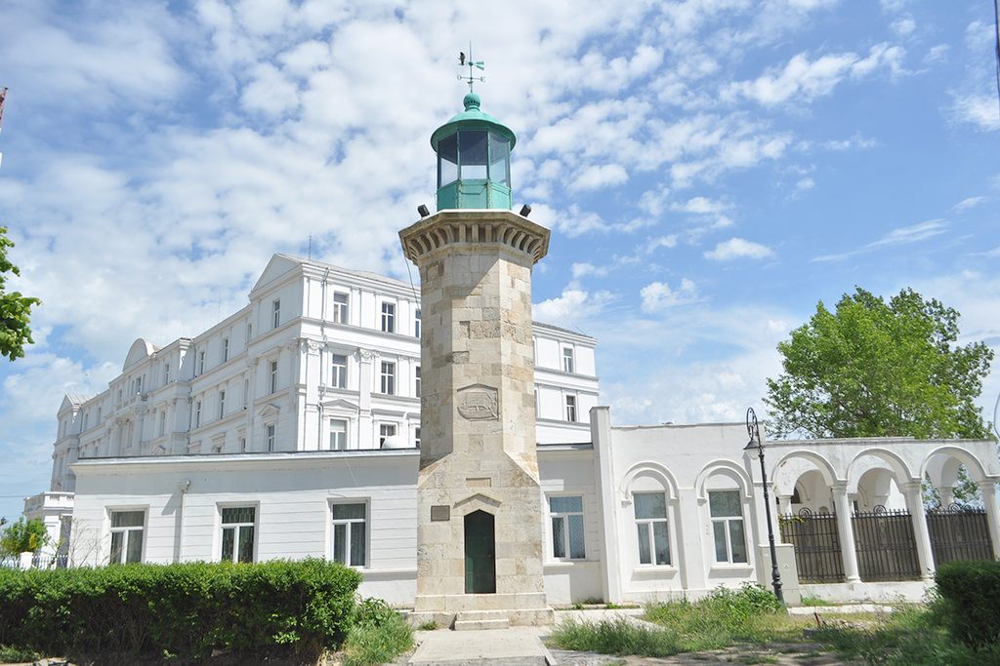
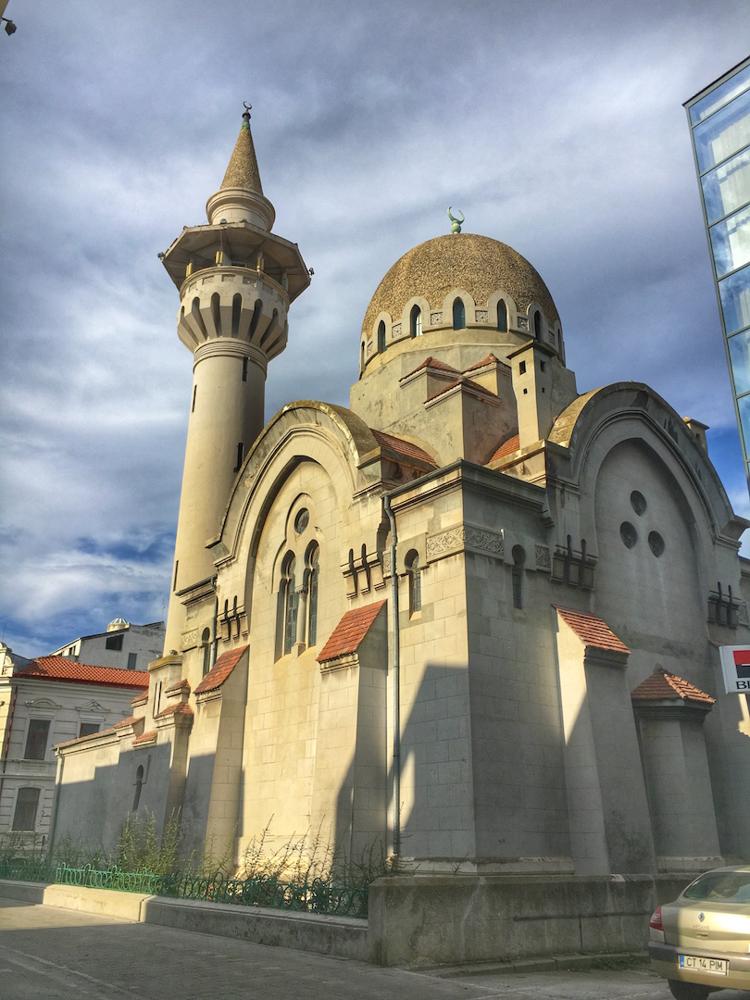

For the summer season and not only, a visit to the Black Sea, respectively Constanta and Mamaia Resort, is the perfect way to spend one or several days. Constanta is a charming city on the shore of the Black Sea, located at a distance of approximately 220 km from Bucharest. In Constanta you can stroll on the seafront, enjoy a drink in the port, you could sunbathe, or visit one of the numerous wonderful places hidden in this city.

- 1. Casino
- The Constanța Casino (Romanian: Cazinoul din Constanța) is a defunct casino, located in Constanța, Romania. It has been designated by the Romanian Ministry of Culture and National Patrimony as a historic monument. The casino is on the Constanța seafront at 2 Elisabeta Boulevard along the Black Sea in the historic Peninsulă District of the city. The casino was built three separate times, with the first structure being erected of wood in 1880. It was designed to be a club and community center for elite and upper-class socialites willing to spend. Once considered Romania's Monte Carlo and a symbol of the city of Constanța, the most-recent and modern version was built in Art Nouveau style, also being the most important Art Nouveau building in the country, designed and built according to the plans of Daniel Renard and inaugurated in August 1910. The most modern version of the Casino was in operation for 38 years, with interruption due to the two world wars, attacked and bombed by Bulgarian and German troops in World War I, ravaged in World War II and, at one point, acted as a makeshift wartime hospital. In 1948 it was taken over by the Communist government becoming a House of Culture for the party until 1960 when it was handed to the National Office of Tourism). The last major repairs took place in 1986–1988, and the building is currently abandoned..
- 2. Mamaia Resort
- Mamaia Romanian pronunciation: is a resort on the Romanian Black Sea shore and a district of Constanța. Considered to be Romania's most popular resort, Mamaia is situated immediately north-east of Constanța's city center. It has almost no full-time residents, being populated mostly during the summer. The beach season is at its best between mid June and early September, when average daytime temperatures range between 25 and 30 °C. The water stays warm until mid autumn. Hotels range from mid-end to exclusive 4- and 5-star hotels and private clubs. There are also camping sites in the north. Mamaia Resort or the Ibiza of Romania as it is also known for entertainment, festivals, night life, luxury and beaches set-up just as the world’s most famous resorts abroad, attracting annually thousands of foreign tourists.
- 3. The Genoese Lighthouse
- The Genoese Lighthouse is a monument of undeniable importance and beauty, being set on the sea front of Constanta city. The lighthouse is 16 m tall, octagon shaped and built in natural stone slabs, glued together in grout made of sand and shells. The lighthouse carries up with a metallic dome, and the tip of the dome is decorated with elements indicating the cardinal points. The dome can be reached by climbing a 53-step spiral ladder. The Lighthouse in Constanta used to guide the sailors with its white light that rose 21 meters above the sea and it was operational as such until 1905, when it was replaced by a modern lighthouse.
- 4. Carol I Mosque
- Carol I Mosque is located at Ovidiu Square and was erected on the initiative of King Carol I, reason for which it goes by his name. The mosque was inaugurated on May the 31st 1913 in the presence of the royal family and of the Muslim representatives of cult in Romania, being the main Muslim rite edifice in our country. Carol I Mosque represents a beautiful and unique mix of Egyptian – Byzantine and Romanian architectural elements, and it is the first edifice in Romania that used reinforced concrete. Annually, the Mosque attracts thousands of tourists, and for a visit one must know a few basic rules of conduct: wear a decent outfit, take off your shoes before stepping inside the mosque and do not pass from in front of those praying if you happen to come here at praying time.
 
<---------------------- The Genoese Lighthouse
Carol I Mosque ------------------------------>